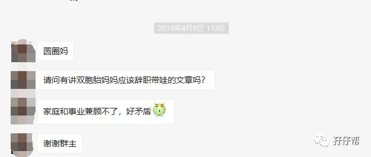
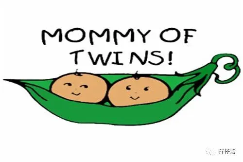
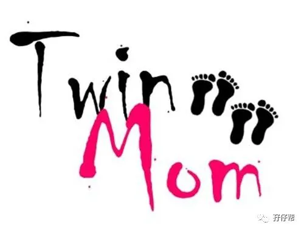
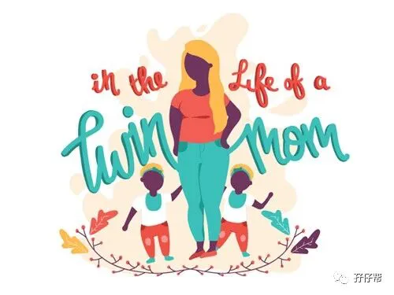
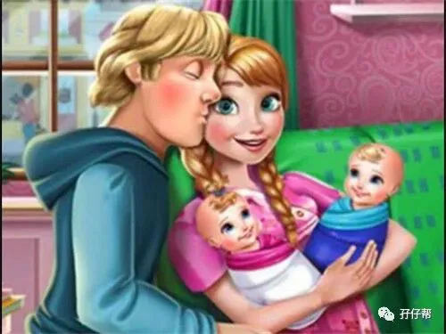

女人的职场道路其实特别难走
刚毕业时被嫌弃没经验
好不容易有了经验
却要面临结婚生子
终于有娃了，却精力有限
家庭事业两难全
如果说，
职场妈妈是个全能CEO，
那么，
双胞胎的全职妈妈必定是董事长，
底薪+提成+奖金+假期+福利+年终奖...
全无的那种！
------孖仔帮
文|圆圈妈 一个文思如尿崩的双胎妈妈
图|来自网络
· 正 · 文 · 来 · 啦 ·
今天的推文是双胞胎喂养群一位妈妈的约稿@嘉淇，她想了解双胞胎妈妈如何兼顾家庭与事业。
真巧！
我做全职妈妈也有半年时间了，正好要跟大家分享下从萌生辞职念头到最终采取行动那段纠结的心路历程。
很多双胎妈妈产生辞职带俩娃的想法大多有以下原因：
家里没有老人帮忙，孩子没人带，很可怜！
老人家不习惯大城市，要把孩子带回老家养，一年才见一次那种，很残忍！
老人家精力有限，只能照顾一个，两孩子被迫分开养，很遭罪！
经济能力薄弱，请不起月嫂保姆，还不如自己来，很无奈！
“保姆虐娃事件”频发，不放心把两孩子交给外人带，很担心！
爱娃心切，只想每时每刻陪在孩子身边，很玻璃心！
有强迫症，不放心任何人照顾，只想亲力亲为，很“虎系”
二胎来了双胞胎，老大老二老三都嗷嗷待哺，很操心！
....
不管什么原因，当你生下双胞胎，面临家庭和事业两难全的瓶颈时，都请你冷静，拿着这4个问题，扪心自问下。
我萌生辞职带娃的念头到真正行动，整整纠结了一年，然后围绕这4个问题，最终选择回归家庭，现分享给舍不得孩子放不下事业的你一点小提示。
（温馨提示，本文充斥着大量妇人之见，请各位看官想喷就喷，别客气！）
01，事业和孩子，谁更重要
这是一道人生必选题，也是妈妈群经常讨论的问题，到底是赚钱重要，还是陪伴孩子更重要。
前段时间很火的PAPI酱的人生排序中提到，自己才是第一位。
但有孩子的妈妈都清楚，当自己与孩子的利益有冲突时，肯定会牺牲自己，成全孩子。
ME TOO！
此时此刻，我只能说：“事业先一边去，陪伴孩子重要！”
圆圈满3个月，我就重返职场，因此错过了他们成长中的很多“第一次”。
即将入园的他们第一次接触大集体，身边正需要父母正向引导，若此时母亲角色再次缺失，那将是我毕生的遗憾。
尤其是双胞胎这样特殊的群体，更应该多费心思去引导教育。
也许人到中年，总会有很多平时很执着，但到了一定年纪就会慢慢看淡的事情。
曾经的我年少轻狂想要做职场女CEO，现在为人妻为人母，只想做家庭女超人。
我在工作岗位上随时可以被替换，可我在儿子们的心目中却无人能替代。
没有谁比我的两个儿子更需要我！
满足他们的需求，不管是喜不喜欢，终归是一个美好的初衷和归宿。
因此，谁轻谁重，看时机，看阶段。
我只是在对的时间，做着对的事情，不偏不倚，刚刚好。
02，你喜欢做全职妈妈吗
讲真，除非家里有矿或特殊爱好，不然，没有谁喜欢做全职妈妈。
全职妈妈这种吃力不讨好的事情，真的倒贴钱都要考虑下。
在大多数国人眼里，全职妈妈意味着黄脸婆一个，老妈子一枚，欧巴桑一只…
“全职妈妈”一词，至今还尴尬地待在贬义词的队伍中无法自拔！
我不鄙视全职妈妈，但我真不喜欢做全职妈妈。
我一直认为，只有工作才可以实现自我价值，实现经济独立，时刻保持进步，而每天面对两孩子，我会觉得自己失去价值，没有安全感和存在感。
尤其是全职妈妈经济不独立，这个大问题！
试下一下：一个成年女人，连买卫生巾的钱都拿不出来，该有多丧啊！
我会觉得没有钱在身上，我会很恐慌。
毕竟手心向上的人永远不自由，家务做得再完美，孩子教育得再出色，我不会赚钱，一样得不到社会尊重和认可。
然而，那只是以前的看法，现在面对嗷嗷待哺的两个崽，一切都！变！了！
我的儿子们没人带，没人管，没人教，已经沦为“城市留守儿童”。
眼下，即便不是让我做全职妈妈，而是做乞丐，我也求之不得了！
能陪在儿子们身边，看着他们长大，我就是一个亿万富翁，阿Q版本的那种！
人到中年，内心盲目，这样的我，回归家庭也许是最好的归属！
也许我更能找到属于自己的价值和存在感。
在自己觉得一无是处的时候，有一个地方可以接纳自己，有两个人迫切需要我。
我只是回到最需要我的地方，有何不可，何乐而不为？
03，经济基础够扎实吗
钱，够用吗？
如果一方没有收入来源，另一方将要担起养活全家的重任，队友能hold得住吗？
意思是，温饱问题能保证吗？生病了有钱治吗？遇上重大支出，银行卡能刷吗？
假设能，那可以持续多久？半年？一年…
一个家庭没有收入或者经济来源不充足，所有花前月下的“赏花赏月赏秋香赏欧巴”都是浮云一片，昙花一现。
我和队友都是穷二代，两孩奴，房奴，车奴…粗略加起来每个月开销30K起步。
即便如此，我在家庭支出这个环节的贡献率是0，换句话讲，我只需要负责花容月貌，油盐柴米酱醋茶均由队友一人搞定！
而且，我们已经这样熬过两年了，生活质量几乎没有太大影响。
因此，经济基础这个问题，我比较乐观。
目前队友是潜力股与优质股兼备，万一哪天崩盘了，老身再重出江湖，拯救苍生。
眼下，急需拯救的是家中那一对整天整夜吵着看动画片的双胞胎熊孩子！
我只需看好当下，着眼于未来即可！
教育出两个优秀的后代，那也是一种投资！
赌一赌呗！
单车变摩托，摩托变玛莎拉蒂！
04，队友支持吗
这个问题才是核心！
真的！
你要不要做全职妈妈，其实跟你没多大关系，这取决于你的队友。
他支持吗？
这里的支持不是说说而已，而是金钱上，行动上，精神上的全方面支持。
一个懂你，爱你，与你三观合拍的队友真的很重要。
他将是你辞职后安心带娃最坚定的信念，最坚实的后盾，没有之一。
也即是，哪怕全世界都在取笑你是个全职妈妈，只要你有队友支持，你一样可以底气十足地怂回去！
离职前，队友跟我说：“有你在的时候，我才觉得有家的感觉！”
我马上get到他这句简短肉麻话的背后隐藏的那些无奈，无助…
他在家SOHO，经常被圆圈打扰，无法正常工作，他急需我退居幕后，甘当他的贤内助，管理好后院。
于是，我递交了纠结一年的辞职信。
讲真，养娃育儿之路，其实也是一场小两口互相牺牲，互相成全的成长过程。
有人说，婚姻就是一个团队，总有人负责脏乱差，有人负责高大上。
虽然分工不同，但目标一致，共同营造一个和睦幸福的小家庭。
因此，没有谁比谁高尚。
不能因为你每天接触屎尿屁，他穿着光鲜亮丽出入各大高级场合，就有了等级贵贱之分，只是分工不同，功能和重要性是一样的。
如果你的队友口头支持你做全职妈妈，但姿态上却觉得你低人一等，那么，请不要纠结了！
哪怕你赚的钱只够买卫生巾，你也不要轻易离职。
吃人嘴短，拿人手软！
老祖宗已经帮我们想好了！
钱管饭吃也算经济独立的时代女性，总好过吃不完兜着走。
其实说了这么多，最终只有两个问题：你愿不愿意？他支不支持？
你愿意！他支持！
那就THAT ’S A DEAL！成交！
全心全意做个全职妈妈，陪伴两孩子成长！
一旦做出选择，就要有义无反顾，破壶沉舟的勇气前进！前进！前进！
古语有云：鱼和熊掌不可兼得。
套用樱桃小丸子的一句话：有些事情不是我不在意，而是我在意了又能怎样。
人呐，总得有所取舍。
有得必有失，放下了才有空余的双手，去收获更多。
如果你最后决定做个全职妈妈，那么请关注下期推文“如何做个高逼格的双胎全职妈妈”。
本期互动
#你想辞职带俩娃吗？纠结啥呢？#
欢迎留言区说出你的苦恼
-END-
重磅互动
#你希望写什么育儿经验干货？#
评论区聊一聊
随便提，万一下篇就写了呢？
关于这个号
谢谢关注！
我是圆圈妈
85后，全职妈妈
家有孖仔两枚，圆圈&圈圈
双胞胎育儿公众号：孖仔帮
ID:twinsbang
旨意分享双胞胎育儿经验帮助双胞胎家庭
有经验可循
有组织可靠
希望我的经验对您有所启发
期待与您一起共享双胞胎育儿经






